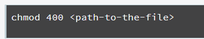
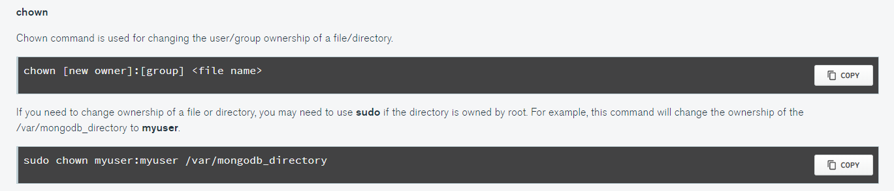
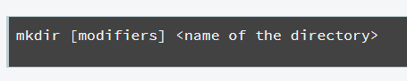

General Pointers
Command Cheet Sheet
Basic Intro for Mongo
Below is a brief explanation of Linux, enough to have a basic understanding to operate Mongo DB
Basics of Linux Directory Structure
- Linux based operating systems are very different from Windows operating systems. We will start with the difference between the directory structure of these two operating systems.
- In Windows operating systems, all the files are stored in different data drives like C: D: E:. But in Linux, files are ordered in a tree structure starting with the root directory represented by a forward slash (/). The root directory contains all other directories and files on the system.
- It is called root because it is at the very top of the directory tree.

- Some top level directories that are part of the root directory by default are /bin, /etc, /tmp, /usr, /home, /root and /var. You can read more about these directories here. We will briefly discuss some common top level directories that you need to be aware of :

Important Definitions
- Current Working Directory : It is the directory in which the user is currently working in. By default, when you log into your linux system, your current working directory is set to your home directory. In this course, it will be /root/workspace. You can check your current working directory by running the pwd (Print Working Directory) command. pwd will print out the absolute path to this directory.
- What is an absolute path?
- Path : A unique location to a file or a folder in a file system of an OS.
- Absolute Path : The complete path of a file or directory in the filesystem from the root (/) directory.
- Relative Path : The path of a file or directory relative to the current working directory.
- In the diagram shown below, mongodb is our Current Working Directory. Let's say that we want to find the path to the db1 directory. The Absolute Path of the db1 directory - /data/mongodb/database/db1. The Relative Path to the db1 directory from the Current Working Directory of mongodb - database/db1

Concept of users in linux
- Linux is a multi-user operating system, which means that more than one user can use the Linux machine at the same time.
- here are three types of users in Linux - root, regular and service. In this tutorial we will discuss only two types of user root and regular.
- root user: This is the main user account in the Linux system. This user is automatically created during the installation and has the highest privileges in the system. The user can perform any administrative task, and is therefore, also known as superuser or administrator. In this course, you will run commands as the root user.
- regular user: This is the normal user account with moderate privileges. This user does not have all the privileges of root. For instance, the root user can install new softwares, change the ownership of files, and manage other users' accounts.
What is `sudo` and when to use it ?
sudo stands for "superuser do" and is a program that allows you to run programs with the security privileges of another user (by default, as the superuser). It allows you to execute a command with elevated privileges (usually as root). With "sudo", you continue to use your user account, but with root privileges. Sudo creates a thorough audit trail, so everything users do gets logged. You should use it when you are required to perform some administrative task that you cannot perform as a normal user.
Permissions
What makes one user different from another user on a Linux machine are the permissions. Permissions are the "rights" to act on a file or directory. The basic rights are read, write and execute.
- Read permission on a file allows the user to view the content of a file.
- Write permission on a file allows the user to modify the content of that file.
- Execute permission on a file allows the user to run the file and execute a program or script.
Permissions can be changed using the chmod command.
- chmod command is used to change the permission of a file or directory. Permissions could be Read, Write or Execute. In this course you will be using the file permission of 400 for granting read-only access to the user.
 - Using flags such as 400 is an easy and short form to set permissions. If you want to know more what the numbers in chmod mean, please visit this page.
- For example, this command will change the permission of m103-keyfile file to read only.

Ownership
- Every file is owned by a specific user and a specific group in Linux. In this course the files will be mostly owned by the root user.
- Ownership can be changed using the chown command.
- 
Commands You Should Know
- The mkdir command creates new directories in the file system. The general syntax is
 - The -p modifier creates the parent directory as necessary. For example :

- If db directory already exists then this command will create only mongodb_data directory. Otherwise it will create the missing directory as well. Sometimes, you will create directories inside a parent directory which is owned by root then you can use the sudo command.

- Deleting a directory - The rm command is used for removing or deleting files and directories in the Linux operating system.

Linux process management